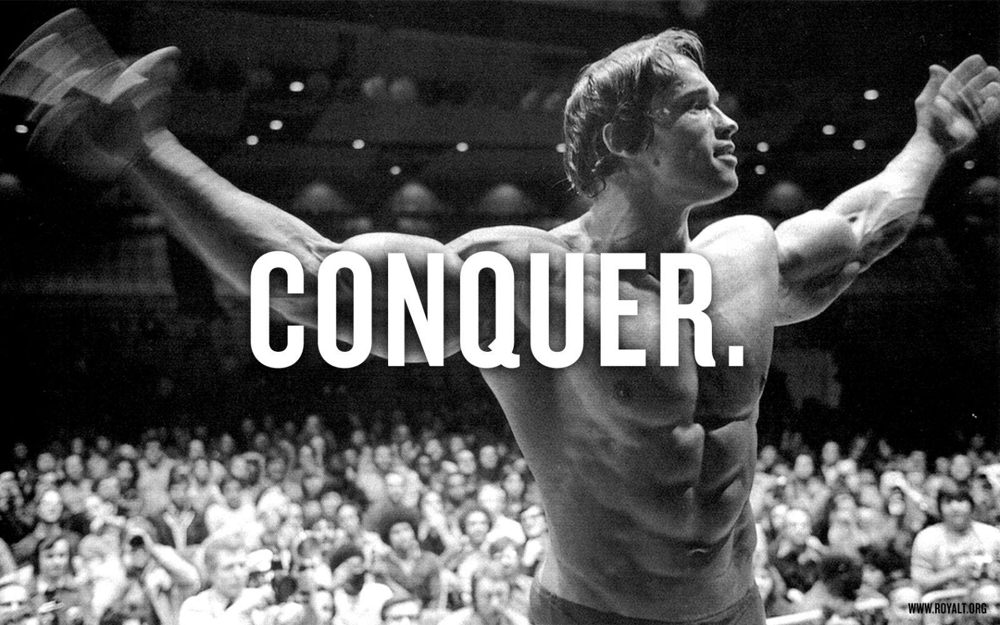
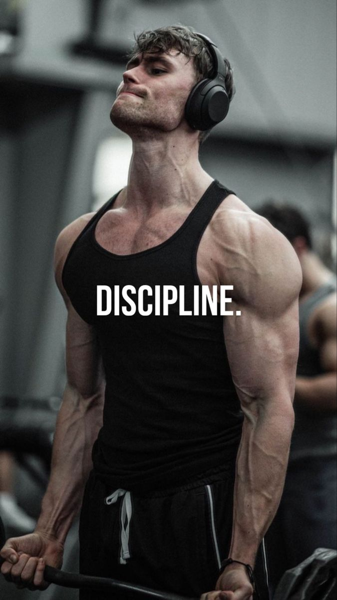
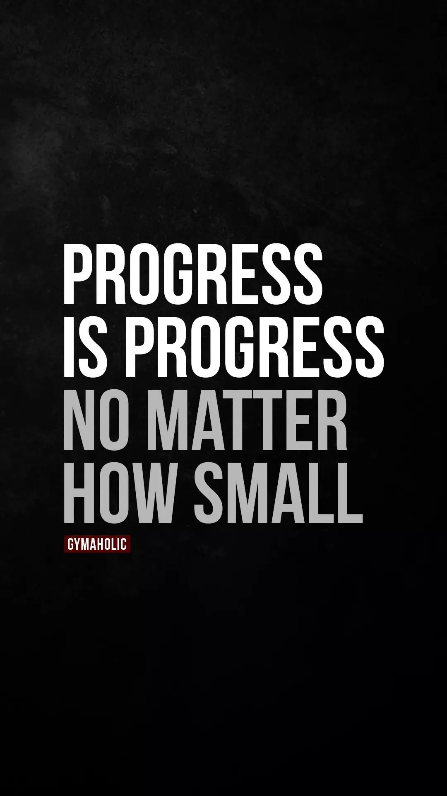
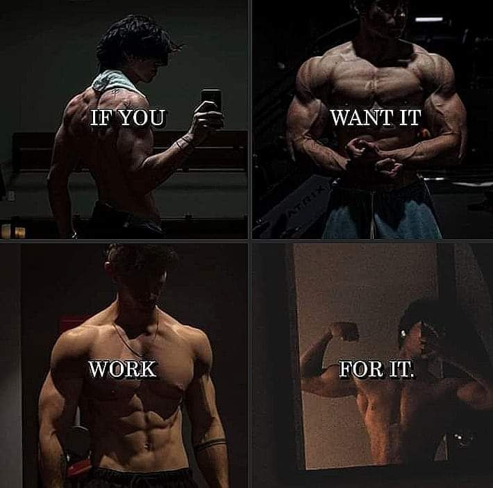

We Build More Than Muscle
We Forge Champions

Discipline
"Results don’t come from motivation—they come from consistency."

Daily effort, routine, and self-control are what drive progress.
Discipline keeps people coming even when motivation fades.
Progress
"Every rep, every drop of sweat takes you one step closer."

Visible improvement in strength, endurance, or physique.
Tracking and celebrating small wins keeps members engaged and motivated.
Passion
"It’s not just a workout—it’s a lifestyle."

Passion turns the gym from a chore into a personal mission.
It creates loyalty, energy, and a culture of pushing limits.